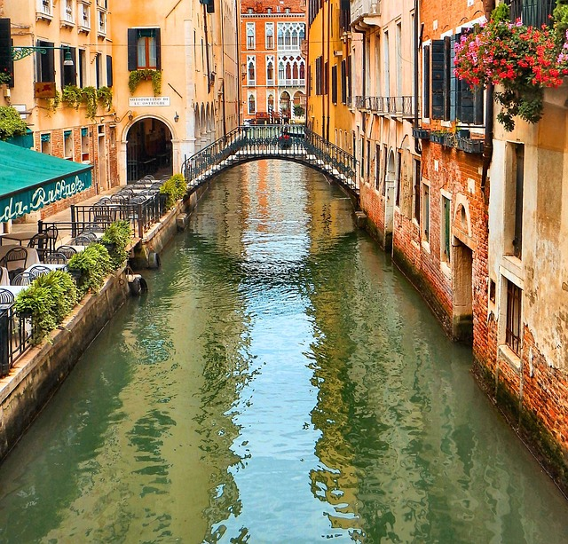
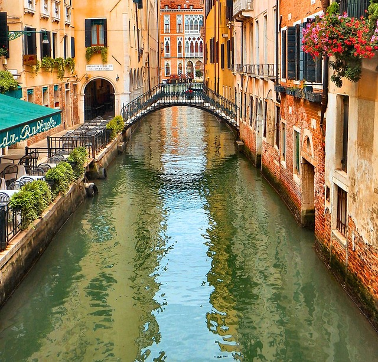

| Suiça | Itália | França |

|
 |

|
|---|
trabalho.
.png)
.png)
Tenho 22 anos e desde criança sou apaixonado por tecnologia. Sempre tive o objetivo de trabalhar na área de TI, porque gosto de aprender coisas novas e de encontrar soluções para os desafios que surgem no dia a dia. Tenho satisfação em conquistar meus objetivos, sejam eles coisas materiais ou conhecimentos que adquiri com esforço e dedicação. Acredito que o aprendizado constante é fundamental para crescer e evoluir, tanto pessoal quanto profissionalmente. Como menciono nos hobbies, a música faz parte de quem eu sou. Ela está sempre presente na minha vida, seja para ajudar a focar, relaxar ou buscar inspiração quando preciso. No geral, gosto de estar em movimento, buscando aprender, criar e entender mais sobre o que me cerca, sempre com vontade de melhorar e de alcançar novos objetivos.
Música
A música sempre fez parte da minha vida. Ela me acompanha nos
momentos bons e nos difíceis, traduz sentimentos que às vezes nem sei explicar. Gosto de
explorar diferentes estilos e descobrir novas sonoridades. Para mim, ouvir música é uma
forma de conexão, inspiração e descanso.
Coding
Mesmo sabendo pouco, sempre fui apaixonado por desenvolvimento web.
Acho incrível poder criar coisas do zero, dar vida a ideias com código. Estou sempre
tentando aprender um pouco mais, testando, errando, acertando… porque realmente gosto disso.
Coisas novas
Gosto de aprender e conhecer coisas novas, mesmo que sejam
pequenas. Pode ser um assunto que nunca ouvi falar, uma habilidade nova, uma curiosidade
aleatória. Me dá uma sensação boa sair do automático e descobrir algo diferente do que já
sei.
| Suiça | Itália | França |
|
 |
|
|---|